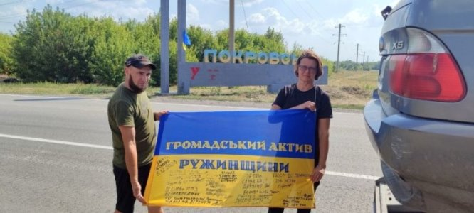

Загальна інформація
Привіт!
Я Олександр, мені 45 років, проживаю в Києві.
Одружений, маю трьох дітей: сина та двох доньок.
Син займається розробкою сайтів та іншими напрямками в IT (він мені і рекомендував цей
курс).
До IT, на моменті, не маю ніякого стосунку, але мені дуже цікаво заглибитися та оволодіти знан-
нями
та вміннями в
цій
сфері.
Вважаю важлим в житті:
- Саморозвиток
- Навчання
- Аналіз
- Діяти
Хочеться сказати про волонтерство
Маю честь бути дотичним до чудових людей та волонтерів з мого рідного містечка Ружин, що
на
Житомирщині.
Посилання на
Fasebook
